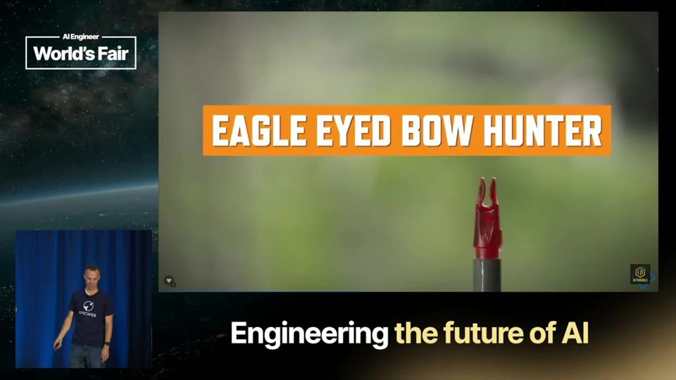
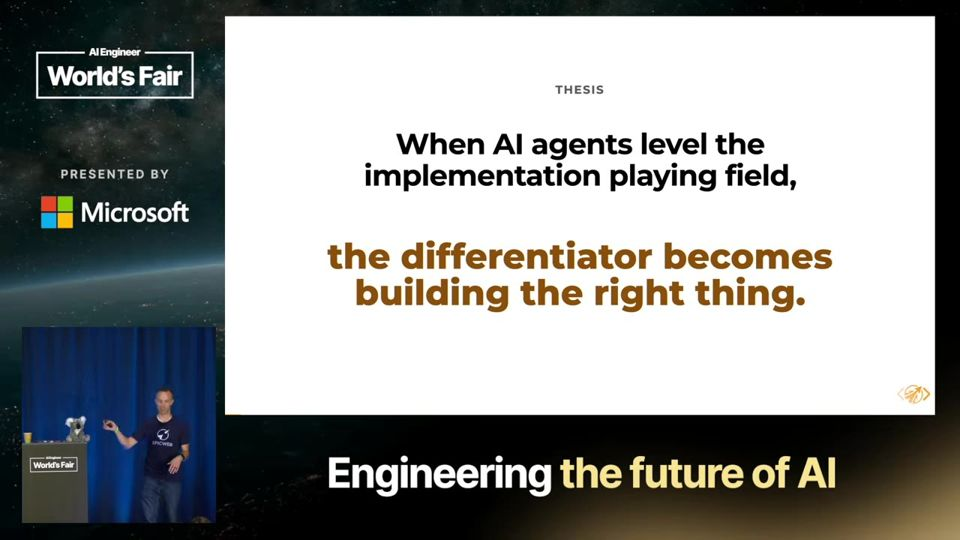
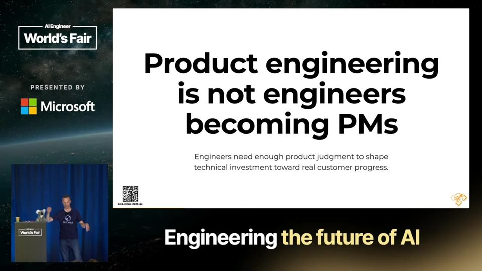
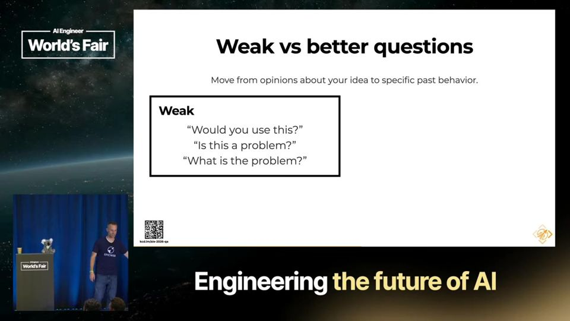
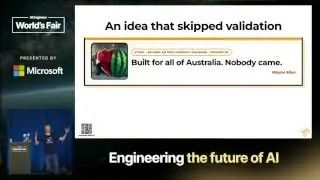

Build the Right Thing: Product Engineering (Part 1)
Com agentes de código, implementar ficou barato. O valor do engenheiro passa a ser escolher o que vale construir e provar isso com evidência.
Em 3 frases
Kent C. Dodds argumenta que, quando agentes nivelam a implementação, o diferencial do engenheiro é construir a coisa certa, e não só construir a coisa direito.
Ele define o engenheiro de produto como quem liga a necessidade do cliente às escolhas técnicas, como modelo de dados, fluxo, restrições e a menor fatia útil do sistema.
Na parte prática, usa o Mom Test (teste da mãe) para validar uma ideia de app para entrar em workshops, e mostra que perguntar sobre comportamento passado gera evidência melhor que perguntar se a pessoa usaria.
Antes de ler
- Engenheiro de produto product engineer
- Mom Test teste da mãe
- MVP produto mínimo viável
- Primitivas do sistema primitives
- Falácia do custo afundado sunk cost fallacy
- Jobs to be done trabalho a ser feito pelo produto
Mais 1 termo
Agentes acertam mais alvos, mas qual alvo?
Dodds usa a imagem de um arqueiro. Antes, acertar o alvo exigia muita habilidade. Agora as flechas são como mísseis teleguiados e acertam muitos alvos. Só que os alvos não valem o mesmo, então escolher o alvo certo é o que diferencia o engenheiro.

A tese do workshop
Quando agentes de IA nivelam o campo da implementação, o diferencial passa a ser construir a coisa certa. Dodds pede que a plateia fotografe esse slide e diz que o workshop inteiro depende dele. A pergunta muda de "dá para construir?" para "vale a pena construir?".

Engenheiro de produto versus gerente de produto
O engenheiro de produto conecta o que o cliente precisa às decisões técnicas. Ele escolhe modelo de dados, formato do fluxo, observabilidade, restrições, modos de falha e a menor fatia útil. Ele conhece as primitivas (blocos básicos) do sistema, e isso o separa do gerente de produto.

Mais 2 ideias deste talk
Mom Test, perguntas fracas e melhores
Perguntas como "você usaria isso?" geram elogios e palpites. Perguntas melhores falam do passado. Quando foi a última vez que aconteceu, o que você fez no lugar, quanto custou. Se a pessoa já gasta esforço ou dinheiro em uma gambiarra, o problema é real.

O custo de construir sem validar
Wayne, ex-colega de uma empresa imobiliária na Austrália, contou que o time passou um ano construindo uma plataforma em microsserviços para suportar todos os australianos logando ao mesmo tempo. Ninguém usou. Ele concluiu que dava para lançar em duas semanas, com integração manual.

O talk é uma abertura de workshop e traz mais opinião e citações de convidados do podcast do palestrante do que dados. A tese de que implementação é commodity (mercadoria) é declarada com ressalvas do próprio Dodds e sem medição. Ele vende cursos e workshops sobre o tema, o que é um interesse comercial. O caso do projeto de 1,2 milhão de dólares australianos vem de uma única fonte contada de memória. A recomendação de não usar desafios de código na contratação não tem evidência apresentada.
O que fazer com isso
- Antes de pedir a um agente que implemente um pedido, escreva em uma frase qual problema do usuário ele resolve e como você saberia que resolveu.
- Troque perguntas como "você usaria isso?" por "quando foi a última vez que isso aconteceu e o que você fez?" em conversas com clientes ou colegas.
- Se um pedido chegar sem justificativa, volte ao responsável pelo produto e pergunte de onde vem a demanda. Use a resposta para decidir quanto esforço o item merece.
- Mostre um protótipo pequeno a usuários reais cedo, em vez de refinar sozinho por semanas.